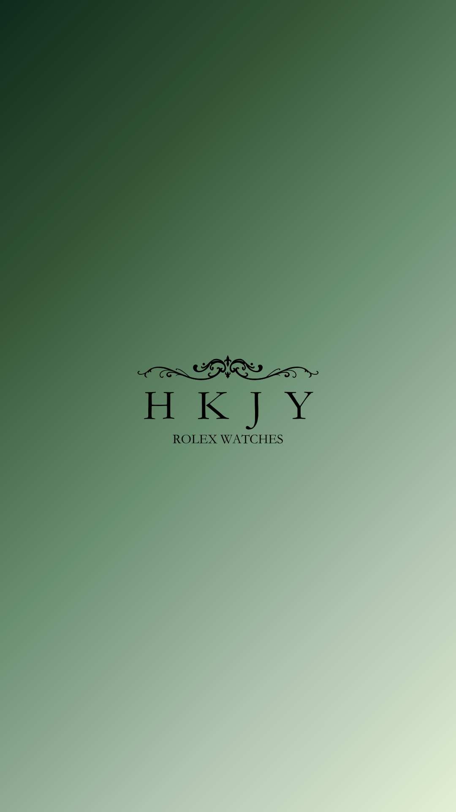
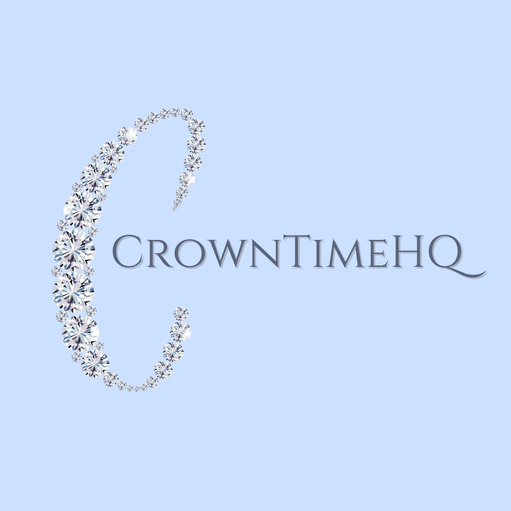
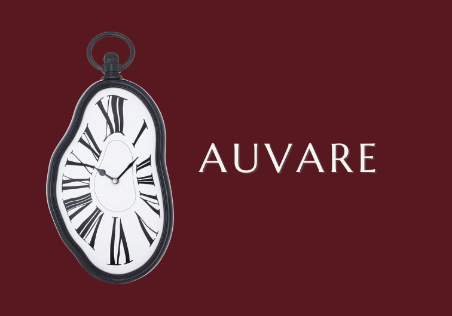

AUVARE se je začel kot tiha ideja v trenutku, ko smo začeli razmišljati o času drugače — ne kot o merjenju minut, temveč kot o občutku, ki ga pustijo za sabo. Prvi koncepti so nastali v majhnem prostoru, z enim ciljem: ustvariti nekaj, kar ne sledi trendom, ampak jih presega.

Z razvojem znamke smo začeli oblikovati jasno identiteto. Minimalizem, natančnost in občutek mirne elegance so postali temelj vsake odločitve. Vsaka linija, vsak detajl in vsaka verzija logotipa je bila korak bližje definiciji AUVARE estetike.

Danes AUVARE predstavlja več kot le vizualno znamko. Je izraz discipline, estetike in občutka za brezčasnost. Naša pot se nadaljuje z enako filozofijo kot na začetku — ustvarjati preprostost, ki nosi globino.
AUVARE je ime, ki združuje občutek zlata kot simbol vrednosti in prestiža ter idejo varovanja oziroma ohranjanja tistega, kar je najdragocenejše. Skupaj zato predstavlja pomen “varovanja vrednosti časa” oziroma “zlatih trenutkov, ki ostanejo”.
Kontaktirajte nas za sodelovanje ali vprašanja.
Kontaktirajte nas